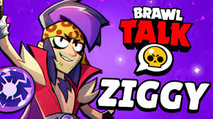

Info Brawl
Info Brawl
As melhores informações sobre brawl stars estão aqui!
Conteúdos de última hora!
Algumas novidades quentinhas pra vocês!
A Supercell (empresa do brawl) acaba de anunciar uma nova logo chegando na próximna
atualização.
Trunk teve seu acesso antecipado agora! Resgate já e se
divirta com mais novo brawler do brawl stars!
Uma nova Brawler Brasileira e Capoeirista chegando no brawl

Ziggy, o novo brawler QUEBRADO do brawl stars! Tudo que você precisa saber sobre ele
está aqui!!
Temporada 41 do Brawl Pass Chegou: 🗡️🛡️🌟 Cavaleiros da Távula Estrelada!
Vazou TUDO da Próxima Atualização: Collab com Subway Surfers, Nova Brawler “Mina”, Ziggy, Skins e
Mais!🔕
Novo pin no Brawl stars de GRAÇA. Corra que é por tempo LIMITADO!!! 🥬🥬🥬
Link de Resgate para Drops DemonÃacos Grátis no Brawl Stars! 🚨😈 Resgate os seus imediatamente! 👹
Nem Tudo Vazou?! 🚇🛹 Supercell Confirma Brawl Talk para Amanhã. 🌟 O que esperar?!